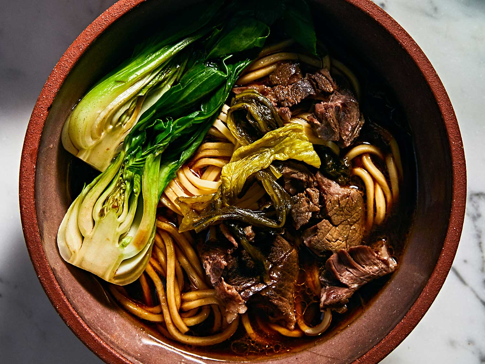

Taiwanese Beef Noodle Soup

First, let’s talk about what Taiwanese Beef Noodle Soup is. It’s delicious. Tender beef, a rich and slightly spicy broth, fresh noodles, a little bok choy, along with fresh scallions and cilantro.
The result is a perfectly orchestrated bowl of spicy, savory, fresh, salty deliciousness. Go on, drool on your keyboard. It happens.
Ingredients
- 2 tablespoons neutral oil, plus more as needed
- 4 bone-in beef short ribs (about 2 pounds total)
- 2 tablespoons doubanjiang
- 1/2 medium yellow onion, peeled and roughly chopped
- 3 green onions, cut into 3-inch pieces
- 2-inch piece fresh ginger, peeled and sliced thin
- 6 cloves garlic, peeled and crushed
- 1 beefsteak tomato, quartered
- 2 tablespoons tomato paste
- 1 tablespoon sugar
- 1/4 cup light soy sauce
- 2 tablespoons Shaoxing wine
- 2 quarts sodium-free beef stock
- 1 cinnamon stick
- 24 ounces fresh ramen or Chinese oil noodles
- 4 to 8 heads baby bok choy
- Toasted Spice Mix (see below)
Toasted Spice Mix
- 3 star anise pods
- 1 bay leaf
- 1 tablespoon fennel seeds
- 1 tablespoon cumin seeds
- 1 teaspoon Sichuan peppercorns
- 1 teaspoon coriander seeds
- 1/2 teaspoon whole cloves
Toasted Spice Mix Instructions
- Lightly toast the spices in a small dry pan over medium heat, shaking occasionally, until fragrant, about 1 to 2 minutes.
- Remove from heat and place everything into a big tea bag or a piece of cheesecloth tied with kitchen twine.
- Set aside unitl ready to use.
Instructions
- Heat the 2 tablespoons of oil in a large Dutch oven over medium-high heat. Add the beef ribs and cook, turning occasionally, unitl deeply browned on all sides, 10 to 15 minutes. (Work in batches to avoid crowding the pan, adding oil as needed.)
- Transfer the beef ribs to a bowl, the reduce the heat to medium, add the doubanjiang to the pan and cook, stirring, for 1 minute. Add the onion, green onions, and ginger and cook, without stirring, unitl caramelized, 3 to 5 minutes. Stir in th garlic, tomato, tomato paste and sugar, continuing to brown until the sugar dissolves and the tomato starts to break down, 2 to 3 minutes.
- Return the ribs to the Dutch oven (along with any juices that may have collected in the bowl) and add the light soy sauce, Shaoxing wine, beef stock, cinnamon stick and the spice mix from earlier. Bring to a boil over medium-high heat, then reduce the heat to low and simmer, covered, until the ribs are extremely tender, about 2 1/2 hours (add water as needed to maintain the volume of liquid). Transfer the ribs to a bowl and set aside.
- Fill a large bowl with hot tap water and add the noodles. Let them loosen and warm through, 1 to 2 minutes. Drain well. Quickly blanch the bok choy in the hot soup.
- Ladle the piping-hot broth through a fine-mesh strainer into four warmed serving bowls, adding 2 cups of broth per bowl. Divide the noodles, bok choy, and ribs among the bowls.
- Optionally garnish with chili oil, sliced green onions, chopped fresh cilanto, and Chinese pickled mustard greens.
- Serve immediately